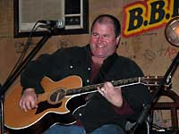

|
В хорошие руки - блюзовые щенки от Петровича (поймите правильно).
И еще не поздно принять участие в определении судьбы премии им. W.C.HANDY.
*
 Roy GAINES Roy GAINES
Не сбавляет оборотов.
Не самый, как говорится, известный блюзмен. Те его альбомы, которые мне доводились слушать, были добротной, но уж слишком предсказуемой музыкой. В 1999г.
мне посчастливилось побывать на его выступлении на 12м Нуттоденском блюз-фестивале. Уже достаточно перегруженный впечатлениями первого дня, я шел мимо главной городской площади, где проходил дневной концерт. Понятно, когда есть возможность войти в клуб и послушать выступления с отличным звуком, концертами под открытым небом как-то пренебрегаешь. А тут издалека привлек внимание звук гитары, жалящий, как у Алберта Коллинза, но при этом гораздо более густой и сочный тембр. С точки зрения техники он играл просто, но он владел тем исключительно блюзовым искусством, когда и единственная нота наполнена ясным смыслом и ярким чувством. Энергетика этой музыки влекла издалека. Пришлось подойти, посмотреть. По сцене прыгал и кувыркался крепкий бритый налысо толстячок в ярко-малиновом костюме. Нужды в его трюках не было, поскольку холодные норвежские парни и так стояли на ушах, толкаясь, как на одесском рынке. Но переизбыток энергии подстегивал и самого Гейнза вертеться веретеном. И, кстати, в том же 1999г. он получил премию им.Дабл-Ю-Си Хэнди как "Артист, заслуживающий большего признания" (W.C.Handy Award Most Deserving of Wider Recognition)
И вот известие, что на Валентинов день в Сент-Луисе, в клубе B.B.King Гейнз зажигал с не меньшим напором. Он, правда, отрастил седую бороду, но все так же играет, положив гитару на загривок, и разводит блюзовых обозревателей на восторги.
*
 БЛЮЗ-ФЕСТИВАЛИ В ДЕЛЬТЕ: БЛЮЗ-ФЕСТИВАЛИ В ДЕЛЬТЕ:
байкеры, сеятели и кабаки.
В последний уик-энд марта в Кларксдейле, легендарном блюзовом городке, с которым крепко связана биография Роберта Джонсона, впервые состоится удивительный фестиваль-ралли "Перекресток мотоциклов и блюза" (Crossroads Bikes & Blues). Самым известным среди участников музыкальной программы является Супер Чикан (Super Chikan). Пока что фестиваль строится на энтузиазме добровольцев. Большинство групп выступают бесплатно или снизили свой гонорар до минимума. Знакомая ситуация.
А 17 апреля, в субботу, в Кларксдейле состоится еще одно непростое блюзовое событие: "Праздник кабаков и сеятелей" (Juke Joint Festival & Planter's Celebration). В старом здании автовокзала автобусной линии Greyhound, о которой пел еще Роберт Джонсон, ныне находится городской справочный центр для туристов. Его владельцы и являются инициаторами нового блюзового праздника. По словам музыкального координатора "Праздника..." первый вопрос, который задают приезжающие в Кларксдейл туристы, это "Где можно послушать блюз?". Второй вопрос: "А кабаки еще есть в городе?" Задачей "Праздника..." будет поддержать и заведения, и музыкантов, поскольку и те, и другие важны для сохранения легенды Кларксдейла. Для воскрешения атмосферы сельского городка, куда на выходные съезжаются поторговать и повеселиться фермеры, к событию будет приурочена и ярмарка, и бега свиней. "Это самое уморительное зрелище, какое только можно увидеть",- обещают устроители. В программу входят дневные бесплатные концерты и вечерня клубная программа с возможностью переезжать из клуба в клуб на специальном бесплатном транспорте. Звездой музыкальной программы является - угадайте, кто - правильно, Супер Чикан.
Теперь в летний туристический период каждый месяц в Кларксдейле будет происходить значительное блюзовое событие. Крупнейшим из них остается традиционный Sunflower River Blues & Gospel Festival.
*
Chicago Music Awards
Любитель блюза заранее уверен, что "Чикагские музыкальные награды" должны отмечать исключительно блюзовые достижения, с акцентом на чикагские блюзовые принципы. Меж тем, Чикаго - городок не маленький, и обитают там не одни только любители блюза. 10 февраля нынешнего года в Зале съездов отеля "Плаца" состоялась 20я церемония вручения музыкальных наград Чикаго. Самой торжественной процедурой было вручение специальной награды Джоэлю Дэйлю (Joel Daly) - "За 50 блестящих лет в кантри-энд-вестерн".В трех категориях: "Артист года", "Сочинитель песен" и "Лучший ритмэндблюзовый/соул исполнитель" - победил рэппер Ар-Келли (R. Kelly). Приятно, что лучшим классическим составом назван Чикагский симфонический оркестр, а лучшей оперой - Чикагская опера (обидно было бы, если бы награда ушла в штат Мичиган... Впрочем, пока такого не случалось). Оставив в стороне категорию "Юморист года", выделим среди призеров именно блюзовых персонажей.
Chicago Music Awards
- Лучший блюзовый артист: Son Seals
- Лучший блюзовый альбом: Royal Blue by Koko Taylor
- Лучший исполнитель госпел: Tanya Ray
- Лучший альбом госпел: Calling All Saints, Saints With A Vision
- Самый популярный клуб: House Of Blues
- Самый популярный блюзовый клуб: Kingston Mines
- Лучшее музыкальное видео-шоу: Attack Of The Boogie
Не стоит удивляться, что неизвестный россиянам клуб "Кингстонские шахты" обошел "Дом блюза" как "Лучший блюзовый клуб". Громадный "Дом блюза" - скорее концертный зал с рестораном, нежели клуб; и по репертуару он абсолютно всеяден.
Среди пяти лауреатов награды за "Достижения всей жизни": Мэвис Стапплз (Mavis Staples of the Staple Singers).
Среди пяти лауреатов "Специальной почетной награды за вклад в местную музыкальную индустрию": певец, ведущий и конферансье Фрэнк Пеллегримо (Frank Pellegrino); легендарный и несокрушимый продюсер Брюс Иглауэр (Bruce Iglauer), основатель и президент Alligator Records.
*
 Клэптон и м-р Джонсон Клэптон и м-р Джонсон
На 23 марта намечен официальный выпуск альбома, в котором Эрик Клэптон исполняет песни легендарного блюзмена Роберта Джонсона. Название: "Я и мистер Джонсон" (Me and Mr. Johnson) - без ложной скромности . Клэптон следует по стопам Питера Грина, для которого Роберт Джонсон являет собой особую мистическую блюзовую икону. Но и Клэптон известен как фанат творчества блюзмена из Дельты Миссиссиппи. Общеизвестно, что со времен группы Cream в постоянный репертуар Клэптона входит самая известная из песен Джонсона: "Перекресток" (Crossroads), которая дала название и антологии записей Клэптона на 4х компакт-дисках. Две менее известные песни Джонсона входят в программу его акустического концерта на MTV Unplagged. Клэптон дебютировал в студии как вокалист в 1966г., исполняя песню Джонсона "Собираюсь в дорогу" (Ramblin' On My Mind). В то время он был участником группы Джона Мэйолла Bluesbreakers. Позже как солист он дважды переписал эту песню для своих концертных альбомов: E.C. Was Here и Just One Night. Исполнял он ее и на концерте в московском КДС. В новом альбоме он исполняет 14 из 29 известных песен Джонсона.
 Клэптон: "Все, что я услышал до него, казалось мне изготовленным для витрины какого-то магазина. Он пел так, словно только для самого себя, и, может быть, для Бога. (Музыка Джонсона) по началу поразила меня своей насыщенностью, я мог ее воспринимать только небольшими порциями. Мне потребовалось набраться сил, прежде чем я смог слушать больше. Но я не мог уже от нее избавиться. Клэптон: "Все, что я услышал до него, казалось мне изготовленным для витрины какого-то магазина. Он пел так, словно только для самого себя, и, может быть, для Бога. (Музыка Джонсона) по началу поразила меня своей насыщенностью, я мог ее воспринимать только небольшими порциями. Мне потребовалось набраться сил, прежде чем я смог слушать больше. Но я не мог уже от нее избавиться.
Спустя годы его музыка стала самым старым моим другом. Она всегда у меня в подсознании. И всегда манит меня из-за горизонта. Это лучшая музыка, которую я когда бы то ни было слышал. Я всегда доверял и доверять буду ее чистоте. "
Клэптон записал "Я и мистер Джонсон" вместе со своими испытанными музыкантами-соратниками: гитаристами Andy Fairweather Low и Doyle Bramhall II, клавишником Billy Preston, басистом Nathan East, барабанщиком Steve Gadd и харпером Jerry Portnoy. Бесспорно, это звездный ансамбль. Воспитанник блюзбэнда Мадди Уотерса. Джерри Портной так же принимал участие в записи другого единственного в дискографии Клэптона альбома, полностью состоящего из кавер-версий: "С колыбели" (From the Cradle). Он был был награжден премией Грэмми как лучший альбом традиционного блюза. И борьбу за блюзовую Грэмми 2005 можно уже теперь считать законченной: она автоматом достанется Клэптону.
Список песен будущего альбома:
- When You Got a Good Friend
- Little Queen of Spades
- They're Red Hot
- Me and the Devil Blues
- Traveling Riverside Blues
- Last Fair Deal Gone Down
- Stop Breakin' Down Blues
- Milkcow's Calf Blues
- Kindhearted Woman Blues
- Come On in My Kitchen
- If I Had Possession Over Judgement Day
- Love in Vain
- 32-20 Blues
- Hellhound on My Trail
Клэптон родился через 8 лет после гибели Джонсона. В марте этого года он отметит свое 59-летие, Джонсон не дожил до 28 лет.
*
 Еще одна попытка открыть миру глаза на суть блюза. Еще одна попытка открыть миру глаза на суть блюза.
Свет увидела еще одна книга с портретом Роберта Джонсона на обложке: Elijah Wald. "ESCAPING THE DELTA: ROBERT JOHNSON AND THE INVENTION OF THE BLUES";. подробнее
Книга И.Уолда "Побег из Дельты: Роберт Джонсон и изобретение блюза" в названии смешивает стили боевика и аналитического исследования; а растиражированный портрет на обложке привлечет внимание пресловутого "широкого читателя". Книга еще не достигла наших берегов. Сведения о ней почерпнуты из рецензии: http://www.nola.com/entertainment/t-p/index.ssf?/base/living-0/107380791143450.xml.
*
 Блюзовые Грэмми 2004. Блюзовые Грэмми 2004.
46я по счету церемония награждения состоялась 8 февраля.
Грэмми 2004
- Лучший альбом традиционногго блюза: Blues Singer - Buddy Guy [Silvertone Records]
- Лучший альбом современного блюза: Let's Roll - Etta James [Private Music]
- Лучший альбом госпел "Go Tell It on the Mountain" The Blind Boys of Alabama
- Ритмэндблюзовый альбом в традиционном стиле "Wonderful" Aretha Franklin
 Кроме того, альбом с музыкой из документального фильма Мартина Скорсезе "Блюз - музыкальное путешествие" получил две премии: как лучший исторический альбом и за лучшую сопроводительную статью. Кроме того, альбом с музыкой из документального фильма Мартина Скорсезе "Блюз - музыкальное путешествие" получил две премии: как лучший исторический альбом и за лучшую сопроводительную статью.
Рай Кудер получил Грэмми в категории Лучший инструментальный поп альбом, который он записал вместе с кубинским музыкантом мануэлем Гэлбаном (Best pop instrumental album: Ry Cooder, with Manuel Galban). Получая награду, Кудер упрекнул правительство США в отказе выдать визу на въезд в страну тем 45 кубинским музыкантам, которых он хотел пригласить на церемонию.
Из курьезов: за участие в записи альбома с симфонической сказкой Прокофьева "Петя и волк" экс-президент экс-СССР Михаил Горбачев и сертифицированный врун Билл Клинтон удостоены Грэмми в категории "Художественное чтение для детей" (Spoken World Album for Children)
*
 Диаманда Галас: Диаманда Галас:
Ух, как поет, змея!
Если вы любите истошный женский визг и тоскливые крики голодных чаек, вам надо слушать Диаманду Галас - по-крайней мере, диапазон и сила впечатляют. Только вот голосистой корове бог ума не дает. Я не хочу задеть поклонников несгибаемой тетки, если вы находите в ней то, чего я не могу углядеть, мне же хуже, не так ли? Я бы и не вспомнил о ней. Но угораздило ее в 2003г. выпустить альбом блюзовых стандартов. Называется "La Serpenta Canta"! Это вам не Rollin' And Tumblin', на хромой козе не объедешь.
Сообразно названию, блюз она закручивает тоже с левой резьбой. Записано на концертах в 2001-2001 годах, под фортепианный аккомпанемент. Репертуар: "Нет такой могилы, чтоб запереть мое тело" (Ain't No Grave Can Hold My Body Down), хукеровский "Пылающий ад" (Burning Hell), "Я так одинок, что почти плачу" (I'm So Lonesome I Could Cry) Хэнка Уилльямса… "Присмотри, чтобы на моей могиле было чисто" (See That My Grave Is Kept Clean) - вообще-то, это песня Блайнд Лемона Джефферсона и называется она "О последней услуге", но с "могилой" название звучит для Галас более впечатляюще. И "Я заклинаю тебя" (I Put a Spell on You) Скриминг Джея Хокинса - а как же без нее. Понятно, что тетка ищет в блюзе: кладбище и черную магию. Ей что, готики не хватает? Еще включена и "Развеселая жизнь" (The Sporting Life) из ее альбома с Джоном Полом Джонсом, который когда-то любители готики пытались сосватать мне за блюзовый. И два соул-хита, перелопаченных из жизнерадостных в суицидальные.
Как всегда, можно только порадоваться, когда музыкант из другого жанра берется за блюз. Когда-нибудь почитателям Галас надоест искусство по принципу "кишки на распашку", и кто-то из них полюбопытствует, а как звучат оригиналы из этой пластинки. Дальше - уж как получится…
Рецензия на альбом у AMG однозначна. Там Галас объявлена величайшей блюзовой певицей. Специалиста по блюзовым рейтингам зовут Франсуа Кутюр (Franзois Couture)... Я абсолютно уверен, что другую великую блюзовую певицу, которую он сможет назвать, зовут Патриция Касс. (Эх, судить бы портным не выше кутерье!).
Можно еще процитировать рецензию из нашенской "Афиши" от Андрея Бухарина: "La Serpenta Canta" целиком состоит из каверов классических стандартов блюза, кантри, госпела, включая "I Put a Spell От You". Песни Хэнка Уильямса, Джона Ли Хукера и даже The Supremes, пропущенные через ее адскую глотку, звучат вовсе не так круто, как можно было бы предположить. И вообще, нельзя не заметить, что Галас выдохлась. Длительные профессиональные занятия самосожжением даром не проходят.
*
Два года назад один мой знакомый друг побывал в Карелии. "В первом же кабаке, куда мы зашли поужинать, - рассказал он, - играл отличный блюз-бэнд". Заметку из газеты "Курьер Карелии" "БЛЮЗ СЕРДЕЧНЫХ СТРУН" мы перепечатываем полностью и без комментариев. Кроме одной ремарки: там на выступлениях местных джазовых и блюзовых музыкантов - аншлаги. Хочется в Карелию: и места красивые, и люди добрые.
*
 Кленовый блюз Кленовый блюз
Ежегодные награды канадского блюзового сообщества называются "Кленовый блюз" (Maple Blues Awards). В этом году церемония чествования проводилась в 7й раз, в Торонто, 19 января. В жюри заседали два знатных блюзовых чикагианина: Боб Кестер (основатель Delmark Records) и Брюс Иглауэр (основатель Alligator Records).
Сообразно названию, награда, вроде бы, нацелена на канадских музыкантов. Однако в очередной раз триумфаторами становятся эмигранты. Оказывается, утечка блюзовых сердец из США происходит не только на Восток, в Европу, но и к северному соседу.
Морган Дэвис (Morgan Davis) взял четыре Кленовых блюза: "Альбом года" ("Painkiller"), "Продюсер года", "Вокалист года" и "Песня года". Морган Дэвис - ветеран блюзовой сцены, играл со многими великими, включая Мадди Уотерса и Джона ли Хукера. Уроженец Детройта, в Канаду он иммигрировал на ПМЖ еще в конце 60-х. AMG о нем пишет, что он хорошо исполняет стандарты. Сведения, видимо, устарели. В последних его альбомах почти все песни - его сочинения, а в Painkiller - все без исключения.
Лучшим клавишником назван Кенни Уэйн, которого в Канаде называют "Блюзовым боссом" (Kenny "Blues Boss" Wayne). Он остается гражданином США, но активно гастролирует в Канаде. Ветеран блюза, он играет классический (немодернизированный) джамп-блюз.
Джак Де Кейзер (Jack De Keyzer) выиграл три "Кленовых…": "Интертейнер года", "Электрический блюз года" и "Гитарист года". (Его новый альбом "6 String Lover".удостоен престижной канадской премии Juno). Он родом из Англии.
Можно сказать, по традиции "Исполнителем на губной гармонике года" назван Карлос дел Джанко (Carlos del Junco). Великолепный музыкант с безупречной виртуозной техникой, он давно заслуживает международного признания. Тяга украшать блюзовые стандарты джазовыми гармониями утаскивает его на грань жанров, где не так много слушателей без педрассудков. Карлос дел Джанко родился на Кубе, но еще ребенком вместе с родителями перебрался в Канаду.
В "Международном" разделе Дюк Роббилард обошел Соломона Бюрка, Корея Хэрриса, Мэджика Слима и Роберта Рэндольфа.
*
 The HOLMES BROTHERS The HOLMES BROTHERS
- звучать из каждого открытого окна.
Интернетная версия престижнейшего журнала шоу-бизнеса вдруг на главной странице в рубрике Feature Artist поместила рассказ о новейшем альбоме Братьев Холмс "Простые истины" (Holmes Brothers - "Simple Truths").
На протяжении четырех десятилетий Братья Холмс играли в спектре от блюза и фанка до кантри и госпел - и обратно. После выпуска в 2001г. ориентированного на госпелл альбома "Разговор с подковыркой" ("Speaking in Tongues"), спродюсированного Джоан Осборном, группа выпускает следующий альбом "Простые истины", записанный всего за четыре дня.
Далее...
*
Газета "Минский курьер" пишет о группе Мадера хард блюз, побывавшей в январе с гастролями в Москве.
*
 В Москву приехал Гэри Примич.
В прекрасном настроении.
Вчера традиционный электрический джем в клубе B.B.King продолжился квазиакустическим джемом, когда в клуб приехал Гэри Примич. Он был общителен: дал Мише Владимирову развинтить свою "оттюнинговую" гармонику; показал Братецкому, как бить языком гармошку снизу на выдохе, а как на вдохе; долго обсуждал вопросы змееведения и гадолюбия с Юрой Каверкиным. Потом спел и сыграл несколько песен, показав, что блюз - это исповедь, а гармоника - это сердце.
По итогам: "Примечания к приезду Примича" и полный набор фотографий.
*
 Король блюза едет прощаться Король блюза едет прощаться
Blues.Ru получил официальное подтверждение от информационного агентства "Медиаполис" (занимавшегося, в частности, делами Эфесовского фестиваля) в том, что БиБиКинг подписал контракт с концертным агентством "Мельница" о проведении 18 мая в Москве, в Кремлевском дворце съездов "Прощального" концерта. "Прощальный" надо понимать так, что БиБиКинг приезжает в Москву в четвертый и в последний раз. Сообщение о "личном" самолете следует понимать так, что для прилета Короля блюза и его оркестра будет зафрахтован специальный самолет. Ничего необычного в этом нет, но для той части публики, которой по барабану почетное профессорство Кинга во многих университетах и консерваториях мира и все его прочие ордена и регалии, "личный самолет" - это доказательство статуса. "Медиаполис" и Blues.Ru заключили соглашение о намерении совместного освещения визита БиБиКинга. В рамках программы "Весь Этот Блюз" следует ожидать серии программ, посвященных удивительному, прекрасному, нестареющему блюзу "Блюзового Мальчика с Бил-стри", ставшего ныне правящим "Королем блюза".
Меж тем, официальный сайт БиБиКинга ничего не сообщает о его планах посетить Россию. Основной темой главной страницы остается рассказ о готовящемся строительстве Музея БиБиКинга, который должен быть открыт в 2005г., к 80-летию Короля. Музей расположится в Индианополе (Миссиссиппи), родном его городе. И частично должен включать в себя здание по производству хлопкового джина (cotton gin building), в котором когда-то работал сам Кинг. Здание и земля предоставляются под музей в качестве взноса города в проект. Остальной бюджет на строительство составляет 10 млн.$., в окончательном варианте музей будет занимать площадь в 15.000.кв.футов.
По словам президента фонда строительства Bill McPherson, "Музей носит имя БиБиКинга как "дань уважения таланту и мечтам просто парня из Дельты Миссиссиппи, который стал Королем блюза, выступал в сотне стран и превратился в легенду". Однако, цели музея включают в себя пропаганду блюза в целом, изучение и сохранение его истории, образовательную деятельность и поддержку различных блюзовых проектов.
*
|
 UNSEEN + UNTOLD: UNSEEN + UNTOLD:
THE BLUES BROTHERS
"Невиданные-Неслыханные: Братья Блюз" - так называется часовая телепрограмма, запланированная на показ в США на 21 января. Интервью со многими создателями фильма перемежаются со сценами, не вошедшими даже в его полную версию: сцены работы Элвуда на фабрике, производящей аэрозоли; история того, как блюзмобиль обретает особые качества; как Джейк яростно крушит бензозаправку. Будут продемонстрированы редкие съемки концерта, где еще мало известные тогда "Братья Блюз" разогревают публику на гастролях The Grateful Dead. Плюс к этому киношные байки, веселые и не очень. К примеру, вывих лодыжки Белуши сильно мешал в съемках финальной сцены. А вот его исчезновение со съемочной площадки в середине работы, как выяснилось, из-за наркотического трипа, заставило призадуматься режиссера, удастся ли вообще снять этот фильм по сценарию, или герой Белуши падет жертвой иллинойских нацистов.
И еще, кстати. На 17 марта нынешнего года в Чикаго назначена премьера мюзикла "Возрождение братье Блюз" (The Blues Brothers Revival).
Великая и незабываемая сцена: "До Чикаго 106 миль, у нас полный бак бензина, полпачки сигарет, уже темно, и на нас - темные очки… Давай!"
'It's 106 miles to Chicago, we've got a full tank of gas, half a pack of cigarettes, it's dark and we're wearing sunglasses... Hit it!'.
106_mile.avi
*
|
 BUDDY GUY BUDDY GUY
Летом 2003 года Бадди Гай выпустил мастерский и душевный акустический альбом "Блюзовый певец" (Blues Singer). Ко дню Советской Армии (шутка), он приурочил начало гастролей "Акустического ансамбля Бадди Гая" (The Buddy Guy Acoustic Ensemble). Они начнутся 23 февраля, пройдут по 17 крупнейшим городам США и завершатся 21 марта в Нью-Йорке, в клубе B.B.King's. Это первые его гастроли в качестве кавалера Медали искусств (The Medal of Arts), которую от имени Конгресса США ему лично вручил Джордж Буш в ноябре прошлого года. Основной реестр наград Гая включает 4 премии Грэмми (к которым вскорости должна прибавиться еще одна), 19 наград им.В.К.Хэнди и Награда столетия от журнала "Биллбоард". В конце прошлого года в Нью-Йорке он дал два концерта под названием "Праздничное блюзовое обозрение" (Holiday Blues Review), в которых ему аккомпанировала группа "Дабл Трабл".
*
|
 ERIC CLAPTON ERIC CLAPTON
Интернет-сайт Undercover объявил, что Эрик Клэптон намерен в наступившем году выпустить два альбома. Один будет посвящен новым песням. Другой - исключительно песням Роберта Джонсона. Любовь Клэптона к песням Джонсона известна. Rambling On My Mind - навсегда в его репертуаре. Обложка прошлогоднего двойного концертного альбома Клэптона содержала намек и на "Перекресток" и на "Терраплейн". С другой стороны, любовь это обретает иногда странные формы. Именно Клэптон взял текст мистической жутковатой песни Crossroads и спел его на мотив миссиссипской плясовой Rollin' And Tumblin'. Питер Грин, 38 лет тому назад сменивший Клэптона в группе Джона Мэйолла, за последние пять лет записал три полновесных альбома, посвященных именно блюзам Джонсона. Клэптон решил вступить в соревнование?
*
|
 MA RAINEY MA RAINEY
14 января американская академия звукозаписи (The United States Recording
Academy) объявила список песен, зачисленных в зал славы Грэмми. Среди них диск Ма Рейни 1925г. "Си Си Райдер" (Ma Rainey "See See Rider Blues").
*
С 21 по 27 февраля четыре города России посетят с концертами Гленн Хьюз и Джо Линн Тернер, не основатели, но герои Deep Purple. По неизвестной науке причине, любители хард-н-хэви считают Хьюза большим спецом по блюзу.
*
 Сергей Воронов и Гия Дзагнидзе - Сергей Воронов и Гия Дзагнидзе -
акустический дуэт.
"День Издевательства над блюзом" - свою заметку об этом концерте наш форумщик Андрей Ордальонов озаглавил цитатой из С.Воронова :
"В воскресенье 18 января в "Би Би Кинге" звучал акустический "блюз" ;) в исполнении Сергея Воронова и Гии Дзагнидзе. Местами блюзом назвать звучавшее язык не поворачивается, но вот акустикой завсегда. "БиБиКинг" был переполнен. Полтора часа Сергей и Гия отрывались по полной программе: звенели, как ансамбль народных инструментов, шептали, как Боря Моисеев, вопили, как не знаю кто, и голосили, как Николай Басков. Классика блюза сменялась отнюдь не блюзовыми стандартами, а то, что было блюзом, звучало ну совсем не так, как к этому все привыкли, но было здорово :) Праздник акустического раздолбайства или "день издевательства над блюзом" (по С.Воронову) состоялся."
Конечно, это не был вечер ортодоксального блюза. Запомнился всем особенно Хучи-кучи Мэн, в аранжировке под фламенко, с положенными оному арабскими гортанными воплями, но временами переходивший в "Степь да степь кругом" под балалаечную трель. Ни капли садизма над блюзом, разумеется, не было. Чувствовалась хорошая школа блюзовых подколок. И уж особенно приятно было видеть клуб полным. В этих (технически невсегда удачных) фотографиях легко угадывается прикольность вечера.
Акустические вечера в B.B.King'e будут продолжаться каждое воскресенье.
*
|
 Bluesmakers Петровича vs. Оркестра Мишуриса Bluesmakers Петровича vs. Оркестра Мишуриса
Поединок в ЦДХ.
Год едва начался, а лучший концерт блюзового сезона уже (возможно) состоялся. Во всяком случае, те, кто 1 января (по старому стилю) смог притащить свою задницу в такой очаг культуры, как Центральный дом художника, едва потом мог на ней усидеть: подстегиваемая дуэльным азартом, музыка горячила как никогда!
Традиция блюзовых дуэлей идет из кабаков Дельты Миссиссиппи 20-х годов до Бил-Стрит и Максвелл-Стрит в Чикаго и Мемфисе. То, что в Новом Орлеане называлось headcuttin' jams, добралось и до Москвы - в ознаменование столетия блюза. Первыми схлестнулись два блюз-бэнда: "Bluesmakers" Михаила ПЕТРОВИЧА Соколова и "Оркестр Михаила Мишуриса. Почему именно они? Они составами равны! Единственные в Москве блюзбнды с "дудками"… Причем, чтоб уравнять шансы, случай распорядился подсократить группу медных у Петровича. Жаль, конечно, что А.Бородин (1/2 of Scolder Brothers) на тот момент покинул Москву по срочному делу. Зато в результате на сцену ЦДХ вышли две команды, каждая по 7 человек.
 К началу концерта за кулисами все еще кипела словесная баталия по типу "да мы вас на раз сделаем" - "кишка тонка" и прочее, о чем не стоит знать почтеннейшей публике. Заодно пытались решить вопросы, что когда играть и кому первому начинать. Переговоры затягивались - вызывать музыкантов на сцену пришлось долго и громко. На сцене метнули жребий. Первый выстрел выпало сделать Мишурису. Он начал вполсилы. Петрович, воспользовавшись строчкой Хукера "I am commin' to shoot you right down", исполнение песни "Boom Boom" предварил не "физ-культ-приветом", а "Я иду тебя убивать" (по-русски). Bluesmakers начали мощно. Группа играла плотным хорошим саундом, с интересными аранжировками, омолодившими подувядшие традиции блюз-рока. А потом они вжарили свою версию "Бунта в камере №9" (Riot in the cell #9). И при всеобщем восторге и публики, и самих музыкантов в словаре даже самого строгого рецензента остались только две оценки: "мощно" и "смачно". К началу концерта за кулисами все еще кипела словесная баталия по типу "да мы вас на раз сделаем" - "кишка тонка" и прочее, о чем не стоит знать почтеннейшей публике. Заодно пытались решить вопросы, что когда играть и кому первому начинать. Переговоры затягивались - вызывать музыкантов на сцену пришлось долго и громко. На сцене метнули жребий. Первый выстрел выпало сделать Мишурису. Он начал вполсилы. Петрович, воспользовавшись строчкой Хукера "I am commin' to shoot you right down", исполнение песни "Boom Boom" предварил не "физ-культ-приветом", а "Я иду тебя убивать" (по-русски). Bluesmakers начали мощно. Группа играла плотным хорошим саундом, с интересными аранжировками, омолодившими подувядшие традиции блюз-рока. А потом они вжарили свою версию "Бунта в камере №9" (Riot in the cell #9). И при всеобщем восторге и публики, и самих музыкантов в словаре даже самого строгого рецензента остались только две оценки: "мощно" и "смачно".
 В трех раундах публика оценивала бой музыкантов громкостью аплодисментов. Первый вчистую выиграл Петрович. Ненадолго показалось, что легкомысленный джамп-блюз "Оркестра Мишуриса" будет комическими интермедиями среди героических блюзроковых картин Bluesmakers. Тромбонист Сергей Капшин "отдувался" за обоих братьев Сколдер. И на фоне его густых вибрато трубач Александр Пчелинцев выстреливал ноты "ЦДХ-стратосфера". В трех раундах публика оценивала бой музыкантов громкостью аплодисментов. Первый вчистую выиграл Петрович. Ненадолго показалось, что легкомысленный джамп-блюз "Оркестра Мишуриса" будет комическими интермедиями среди героических блюзроковых картин Bluesmakers. Тромбонист Сергей Капшин "отдувался" за обоих братьев Сколдер. И на фоне его густых вибрато трубач Александр Пчелинцев выстреливал ноты "ЦДХ-стратосфера".
Незлые, в общем-то, языки объясняли первый результат тем, что Михаил Петрович, у которого в друзьях пол-Москвы, насобирал аудиторию из своих добровольных квакеров. Доля правды есть: гостей "от Петровича" в зале было больше. Но в дальнейшем публика абсолютно доказала свою объективность.
Шляпа и борода Петровича - это фактор на сцене. Но не надо недооценивать артистизма, прыжков и жилетки Мишуриса. Не говоря уж о том, что как ведущий концерта он может убрать любого конферансье. Пусть это "аксессуары", но их не стоить сбрасывать со счетов, когда дуэль проходит перед публикой.
 Когда Мишурис запел про "пять долгих лет, что он проработал на одну женщину. А у нее хватило наглости выгнать его из дома" (Five Long Years) - тут уж соединились искусство театрального трагика старой школы и выдающегося вокалиста, который певческую школу проходил не "где-нибудь там", а именно в Чикаго, в блюзовой странице мира. В песне о вреде женского алкоголизма (Hard Drinking Woman) он погнал Артема Жульева (тенор-сакс) и Илью Алехина (альт-сакс) туда, куда Макар точно телят не гонял - в зрительный зал ЦДХ. Именно "погнал", потому что они, якобы, засмущались. И получился триумфальный проход. Соло превратилось в скетч, публика радостно вертела головами. Когда Мишурис запел про "пять долгих лет, что он проработал на одну женщину. А у нее хватило наглости выгнать его из дома" (Five Long Years) - тут уж соединились искусство театрального трагика старой школы и выдающегося вокалиста, который певческую школу проходил не "где-нибудь там", а именно в Чикаго, в блюзовой странице мира. В песне о вреде женского алкоголизма (Hard Drinking Woman) он погнал Артема Жульева (тенор-сакс) и Илью Алехина (альт-сакс) туда, куда Макар точно телят не гонял - в зрительный зал ЦДХ. Именно "погнал", потому что они, якобы, засмущались. И получился триумфальный проход. Соло превратилось в скетч, публика радостно вертела головами.
Традиционное блюзовое упражнение для губной гармоники - про поезд, который набирает ход, гудит, стучит колесами все быстрее, и скрывается за горизонтом - стал предметом "конкурса капитанов". Вроде бы Петрович на губной гармонике должен был переиграть Мишуриса по той простой причине, что это для него главный инструмент, а для Мишуриса - домашнее хобби. Лидировал, конечно, Петрович. А вот дуэли не вышло, получился дуэт! Да и вообще, пока негритянские воровские песни соседились с пикантными румбами, удивительным образом на сцене началось совершенно незапланированное братание.  Если в первом раунде лидеры обменивались колкостями и угрозами, хоть и шутливыми, то во втором раунде Мишурис поблагодарил Петровича за исполнение песни Alabama Train, которую он очень любит. А музыканты противоборствующих сторон дружно подпевали и подыгрывали соперникам, сияя широкими улыбками.
Второй раунд закончился очевидной ничьей. Если в первом раунде лидеры обменивались колкостями и угрозами, хоть и шутливыми, то во втором раунде Мишурис поблагодарил Петровича за исполнение песни Alabama Train, которую он очень любит. А музыканты противоборствующих сторон дружно подпевали и подыгрывали соперникам, сияя широкими улыбками.
Второй раунд закончился очевидной ничьей.
В этом был сюрприз вечера - соревнование увлекло всех участников настолько, что азарт подстегнул играть весело. Песни чередовались, оба коллектива были постоянно на сцене.
Оба клавишника пользовались электроинструментами. Но Олег Горчаков ("Оркестр") настроился на фортепианный звук и выдал стопроцентно бугивужые перекаты, громко и решительно, как я никогда еще его не слышал. Его личный противник Андрей Барбашов предпочитал электроорганный джазовый звук, используя тембры от а-ля Хэммонд-Би-3 до электропиано. Схватка получалась более интересной не откровенной борьбой, а пересечением и открытым сравнением возможностей разных инструментов, манеры игры и музыкальных стилей. Используя разные наборы ударных, Валерий Дедов на сильную долю буквально подпрыгивал на стуле, поскольку играл "jump" - и, напротив, Сергей Чекмаренко был стабилен и суров, вколачивая ритм, как надежные сваи в каменный "rock"-фундамент. Можно поспорить о деталях игры, но оба гитариста: и Юрий Кривошеин, и Вадим Иващенко - мастера своего дела. Но первый предлагал блюз-роковое звучание "цельнокорпусного" инструмента, с мощными длинными нотами. Второй предпочитал легкие квази-джазовые по-нотные пробеги полуакустики. Правда, Иващенко для дуэли припрятал "туз в рукаве" - заиграл слайдом (в чем раньше, кажется, замечен не был). Добавьте к этому шестиструнный электро-бас Алексея Малярова vs. контрабас Александра Любарского. Получится вечер, перенасыщенный контрастами, событиями, игрой и музыкой.
 В давние-стародавние времена блюзовая дуэль могла закончится тем, что публика изгоняла проигравшего. В ЦДХ, 14 января 2004г., по удачному выражению рефери победила не дружба, а публика. Хотя за два с половиной часа она заметно подустала. Ну так, для восприятия музыки, душа обязана трудиться. А тут еще и блюз заставляет вопить, притоптывать ногой и всячески еще двигать телом… Мудрено ли, что расходились "с приятной усталостью" и чувством почти забытого "глубокого удовлетворения"?
*
|
|
Абсолютным чемпионом по числу номинаций в нынешнем году стал Ким Уилсон (Kim Wilson), что неудивительно, поскольку в ушедшем году он выпустил выдающийся альбом "В поисках неприятностей" (Lookin' For Trouble). Довольно неожиданно было увидеть, что четыре номинации получил Отис Тейлор (Otis Taylor), участник позапрошлогоднего Эфесовского блюз-фестиваля в Москве, выпустивший своеобразный, но и довольно странный с точки зрения чистого блюза альбом "Правда - не выдумка" (Truth Is Not Fiction).
*
|
|
Гитарист Владимир Кораблин и харпер Владимир Братецкий год назад затеяли немодный совсем акустический блюзовый дуэт. Тогда казалось, под такой формат и работы не найти. Хотелось хотя бы записать альбом. И так хотелось, что альбом был записан и назван по песне Мадди Уотерса "Звонок издалека" (Long Distance Call). Весь из довольно древних блюзовых стандартов, но исполненный языком современного блюза, да еще с преимущественной ориентацией на европейскую манеру. Гибрид получился очень свежо звучащим, а главное - очень искренним. Презентация состоялась 11 января на акустическом вечере в клубе B.B.King, при единодушном одобрении публики. И что интересно - без работы дуэт не простаивает (тьфу-тьфу-тьфу). Здесь небольшой фоторепортаж об этом концерте, и ряд фотографий, сделанных во время фотосессии для оформления альбома.
*
|
|

|
 Bluesmakers Петровича vs. Оркестра Мишуриса
Bluesmakers Петровича vs. Оркестра Мишуриса
 К началу концерта за кулисами все еще кипела словесная баталия по типу "да мы вас на раз сделаем" - "кишка тонка" и прочее, о чем не стоит знать почтеннейшей публике. Заодно пытались решить вопросы, что когда играть и кому первому начинать. Переговоры затягивались - вызывать музыкантов на сцену пришлось долго и громко. На сцене метнули жребий. Первый выстрел выпало сделать Мишурису. Он начал вполсилы. Петрович, воспользовавшись строчкой Хукера "I am commin' to shoot you right down", исполнение песни "Boom Boom" предварил не "физ-культ-приветом", а "Я иду тебя убивать" (по-русски). Bluesmakers начали мощно. Группа играла плотным хорошим саундом, с интересными аранжировками, омолодившими подувядшие традиции блюз-рока. А потом они вжарили свою версию "Бунта в камере №9" (Riot in the cell #9). И при всеобщем восторге и публики, и самих музыкантов в словаре даже самого строгого рецензента остались только две оценки: "мощно" и "смачно".
К началу концерта за кулисами все еще кипела словесная баталия по типу "да мы вас на раз сделаем" - "кишка тонка" и прочее, о чем не стоит знать почтеннейшей публике. Заодно пытались решить вопросы, что когда играть и кому первому начинать. Переговоры затягивались - вызывать музыкантов на сцену пришлось долго и громко. На сцене метнули жребий. Первый выстрел выпало сделать Мишурису. Он начал вполсилы. Петрович, воспользовавшись строчкой Хукера "I am commin' to shoot you right down", исполнение песни "Boom Boom" предварил не "физ-культ-приветом", а "Я иду тебя убивать" (по-русски). Bluesmakers начали мощно. Группа играла плотным хорошим саундом, с интересными аранжировками, омолодившими подувядшие традиции блюз-рока. А потом они вжарили свою версию "Бунта в камере №9" (Riot in the cell #9). И при всеобщем восторге и публики, и самих музыкантов в словаре даже самого строгого рецензента остались только две оценки: "мощно" и "смачно".  В трех раундах публика оценивала бой музыкантов громкостью аплодисментов. Первый вчистую выиграл Петрович. Ненадолго показалось, что легкомысленный джамп-блюз "Оркестра Мишуриса" будет комическими интермедиями среди героических блюзроковых картин Bluesmakers. Тромбонист Сергей Капшин "отдувался" за обоих братьев Сколдер. И на фоне его густых вибрато трубач Александр Пчелинцев выстреливал ноты "ЦДХ-стратосфера".
В трех раундах публика оценивала бой музыкантов громкостью аплодисментов. Первый вчистую выиграл Петрович. Ненадолго показалось, что легкомысленный джамп-блюз "Оркестра Мишуриса" будет комическими интермедиями среди героических блюзроковых картин Bluesmakers. Тромбонист Сергей Капшин "отдувался" за обоих братьев Сколдер. И на фоне его густых вибрато трубач Александр Пчелинцев выстреливал ноты "ЦДХ-стратосфера".  Когда Мишурис запел про "пять долгих лет, что он проработал на одну женщину. А у нее хватило наглости выгнать его из дома" (Five Long Years) - тут уж соединились искусство театрального трагика старой школы и выдающегося вокалиста, который певческую школу проходил не "где-нибудь там", а именно в Чикаго, в блюзовой странице мира. В песне о вреде женского алкоголизма (Hard Drinking Woman) он погнал Артема Жульева (тенор-сакс) и Илью Алехина (альт-сакс) туда, куда Макар точно телят не гонял - в зрительный зал ЦДХ. Именно "погнал", потому что они, якобы, засмущались. И получился триумфальный проход. Соло превратилось в скетч, публика радостно вертела головами.
Когда Мишурис запел про "пять долгих лет, что он проработал на одну женщину. А у нее хватило наглости выгнать его из дома" (Five Long Years) - тут уж соединились искусство театрального трагика старой школы и выдающегося вокалиста, который певческую школу проходил не "где-нибудь там", а именно в Чикаго, в блюзовой странице мира. В песне о вреде женского алкоголизма (Hard Drinking Woman) он погнал Артема Жульева (тенор-сакс) и Илью Алехина (альт-сакс) туда, куда Макар точно телят не гонял - в зрительный зал ЦДХ. Именно "погнал", потому что они, якобы, засмущались. И получился триумфальный проход. Соло превратилось в скетч, публика радостно вертела головами. Если в первом раунде лидеры обменивались колкостями и угрозами, хоть и шутливыми, то во втором раунде Мишурис поблагодарил Петровича за исполнение песни Alabama Train, которую он очень любит. А музыканты противоборствующих сторон дружно подпевали и подыгрывали соперникам, сияя широкими улыбками.
Второй раунд закончился очевидной ничьей.
Если в первом раунде лидеры обменивались колкостями и угрозами, хоть и шутливыми, то во втором раунде Мишурис поблагодарил Петровича за исполнение песни Alabama Train, которую он очень любит. А музыканты противоборствующих сторон дружно подпевали и подыгрывали соперникам, сияя широкими улыбками.
Второй раунд закончился очевидной ничьей. 


 Номинанты на премию W.C.HANDY-2004
Номинанты на премию W.C.HANDY-2004 Московский
Московский Roy GAINES
Roy GAINES{kind=link}